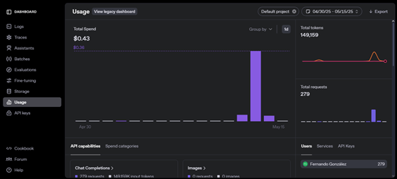

¿Cómo funciona la API de OpenAI?
La API de OpenAI permite enviar mensajes a modelos de lenguaje como ChatGPT y recibir respuestas generadas. Este
proceso se realiza mediante solicitudes HTTP seguras utilizando tu propia clave API.
- Protocolo seguro: Solicitud
POST al endpoint
https://api.openai.com/v1/chat/completions.
- Clave API: Obligatoria en el encabezado como
Bearer TU_API_KEY.
- Entrada JSON: Se estructura como un array de mensajes.
- Respuesta: Un JSON con el texto generado por la IA.
1. Solicitud a la API usando fetch
const respuesta = await fetch("https://api.openai.com/v1/chat/completions", {
method: "POST",
headers: {
"Content-Type": "application/json",
"Authorization": "Bearer TU_API_KEY_AQUÍ"
},
body: JSON.stringify({
model: "gpt-3.5-turbo",
messages: [{ role: "user", content: "¿Qué es ChatGPT?" }]
})
});
2. Procesar la respuesta y guardar el texto en una variable
const data = await respuesta.json();
const respuestaIA = data.choices[0].message.content;
// Ahora puedes usar la respuestaIA donde desees
console.log(respuestaIA);
3. Llamar a la función y usar la respuesta donde quieras
async function obtenerRespuesta() {
// Código de solicitud y procesamiento aquí
...
return respuestaIA;
}
obtenerRespuesta().then(texto => {
console.log("La IA respondió:", texto);
});
¿Qué son los tokens en OpenAI?
Los tokens son las unidades básicas que OpenAI utiliza para procesar texto. Cada palabra,
símbolo o carácter es dividido en fragmentos llamados tokens. El uso de la API se cobra en función de la cantidad
de tokens procesados (entrada + salida).
- Un token no es una palabra completa: Puede ser una palabra, parte de ella, o incluso un
símbolo.
- Promedio: 1 token ≈ 4 caracteres en inglés o ≈ 0.75 palabras.
- Cobro: Se calcula por la suma de los tokens enviados (prompt) + tokens generados (respuesta).
- Modelos grandes consumen más tokens: Por lo que optimizar tus prompts reduce costos.
Ejemplo práctico de conteo de tokens
Prompt: "Hola, ¿cómo estás?"
Tokens aproximados: 5
Respuesta: "Estoy bien, gracias. ¿En qué te ayudo hoy?"
Tokens aproximados: 9
Total tokens en esta conversación: 14
Consejo:
✔ Es recomendable hacer prompts claros y concisos.
✔ Recuerda que el sistema cobra por cada token, aunque sea solo el mensaje inicial.
✔ Usa herramientas como tiktoken o plataformas online para calcular tus tokens antes de enviar la solicitud.
Tabla de costos por modelo (Actualizado mayo 2025)
| Modelo |
Tokens de Entrada (Input) |
Tokens de Salida (Output) |
| GPT-4.1 |
$2.00 / 1M tokens |
$8.00 / 1M tokens |
| GPT-4.1 mini |
$0.40 / 1M tokens |
$1.60 / 1M tokens |
| GPT-4.1 nano |
$0.10 / 1M tokens |
$0.40 / 1M tokens |
| GPT-4o |
$5.00 / 1M tokens |
$20.00 / 1M tokens |
| GPT-4o mini |
$0.60 / 1M tokens |
$2.40 / 1M tokens |
| GPT-4.5 |
$75.00 / 1M tokens |
$150.00 / 1M tokens |
| GPT-3.5 Turbo |
$0.50 / 1M tokens |
$1.50 / 1M tokens |
| OpenAI o3 |
$10.00 / 1M tokens |
$40.00 / 1M tokens |
| OpenAI o4-mini |
$1.10 / 1M tokens |
$4.40 / 1M tokens |
| OpenAI o1-pro |
$150.00 / 1M tokens |
$600.00 / 1M tokens |
Los costos se calculan por tokens consumidos en entrada + salida, según el modelo.
Dashboard de uso de la API de OpenAI
OpenAI ofrece a sus usuarios una página oficial donde pueden visualizar el consumo de tokens, solicitudes y
gastos realizados en tiempo real. Este panel está disponible en https://platform.openai.com/usage.
- Monitoreo en tiempo real: Permite ver el uso detallado por día, modelo y tipo de solicitud.
- Control de gastos: Visualiza cuánto dinero has consumido y la cantidad de tokens gastados.
- Requiere saldo disponible: Para poder usar la API, es necesario tener saldo cargado en tu
cuenta de OpenAI, ya sea mediante suscripción o pago por uso.
